Lima + Arequipa Adventure
Robben schwimmen · Lima-Highlights · Selbstfahrer 4×4 · 2 Personen
10. – 18. Oktober 2026 · 9 Nächte
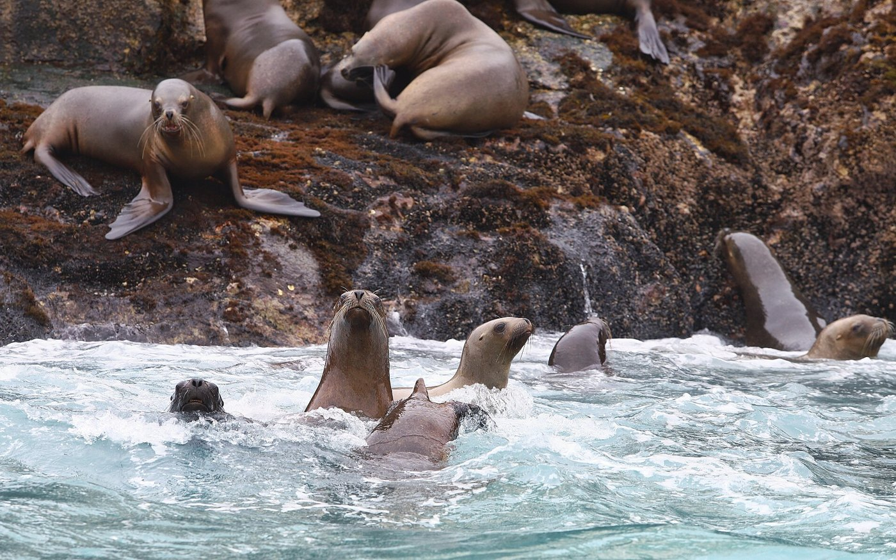
Phase 1 – Lima (10.–13.10.): Miraflores, Centro, Barranco, Schwimmen mit Robben (Islas Palomino)
Phase 2 – Arequipa (13.–18.10.): Chachani, Salinas, Colca – 4×4 selbst fahren
Mietwagen nur Arequipa: 14.–17.10. (4 Tage)
Erstellt für Ralf · Stand Sept. 2026 · Fotos: Wikimedia Commons
1. Reiseübersicht
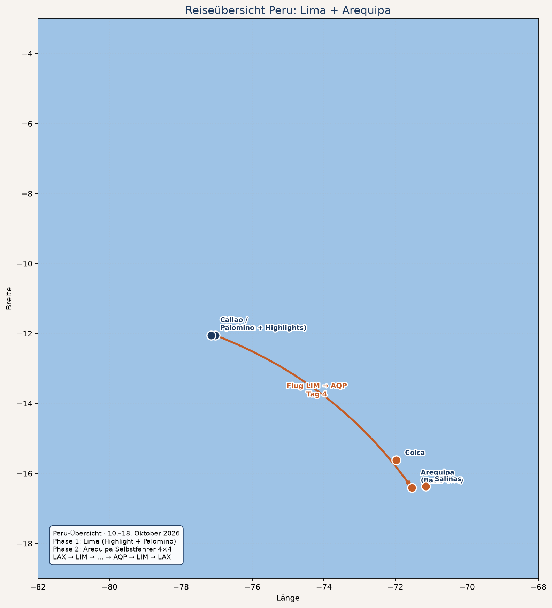
Logik der 9 Nächte: 2–3 Nächte Lima zuerst (Meereshöhe, kein Höhenstress), dann Flug nach Arequipa und Akklimatisation vor den 4×4-/Trek-Tagen.
| Tag | Datum | Ort | Programm | Nacht |
|---|
| 1 | Fr 10.10. | Lima | Ankunft LIM, Miraflores Malecón / Parque del Amor | Miraflores |
| 2 | Sa 11.10. | Lima | Highlights: Centro Histórico, Huaca Pucllana, Barranco, Ceviche | Miraflores |
| 3 | So 12.10. | Lima | Islas Palomino – Schwimmen mit Robben | Miraflores |
| 4 | Mo 13.10. | LIM→AQP | Vormittag Puffer / Flug nach Arequipa, Stadt leicht | Arequipa Centro |
| 5 | Di 14.10. | Arequipa | 4×4 holen + Chachani Downhill | Arequipa |
| 6 | Mi 15.10. | Arequipa | Laguna de Salinas selbst fahren | Arequipa |
| 7 | Do 16.10. | Colca | Selbstfahrt Cabanaconde, Trek Sangalle | Sangalle |
| 8 | Fr 17.10. | Colca | Cóndor, Rückfahrt AQP, Auto zurück | Arequipa |
| 9 | Sa 18.10. | AQP | Puffer / Yanahuara / Abflug (via LIM) | Flug / AQP |
2. Lima – Highlights
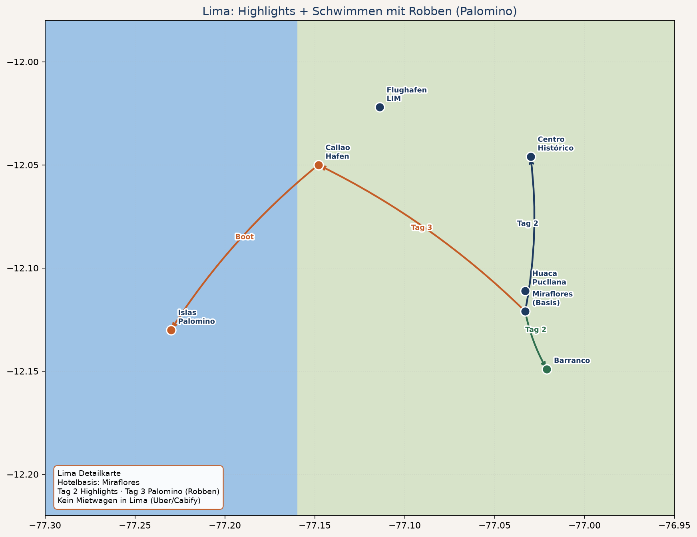
Hotelbasis Miraflores. In Lima kein Mietwagen – Uber/Cabify. Tag 3 Boot ab Callao zum Robben-Schwimmen.
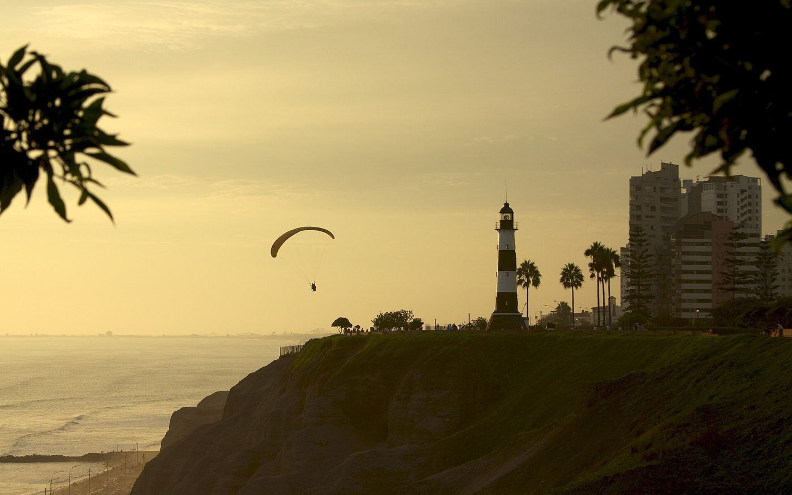
Miraflores · Malecón
Klippen, Paraglider, Parque del Amor – Basis-Viertel
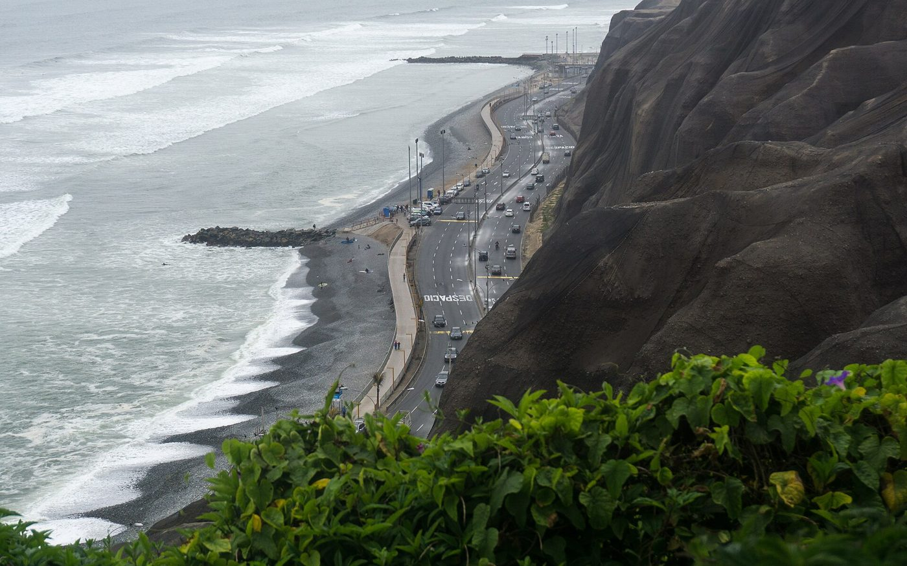
Costa Verde
Pazifikküste unter den Klippen
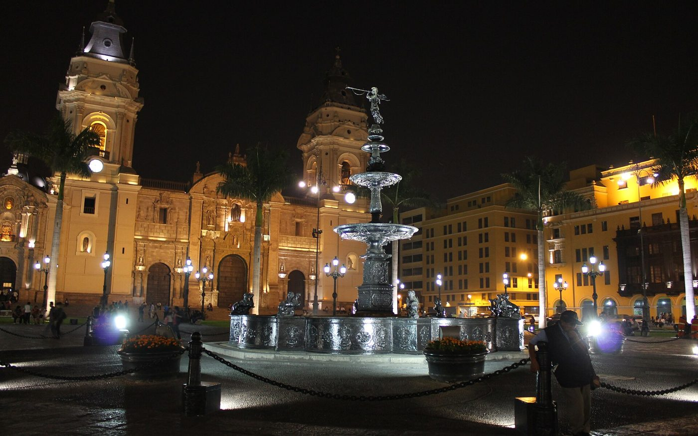
Centro Histórico
Plaza Mayor, Kathedrale, San-Francisco-Katakomben
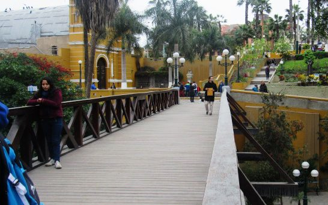
Barranco
Puente de los Suspiros, Street Art, Bars
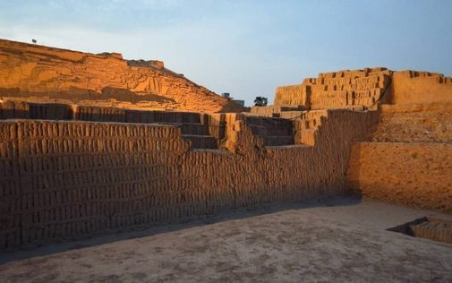
Huaca Pucllana
Präkolumbische Pyramide mitten in Miraflores
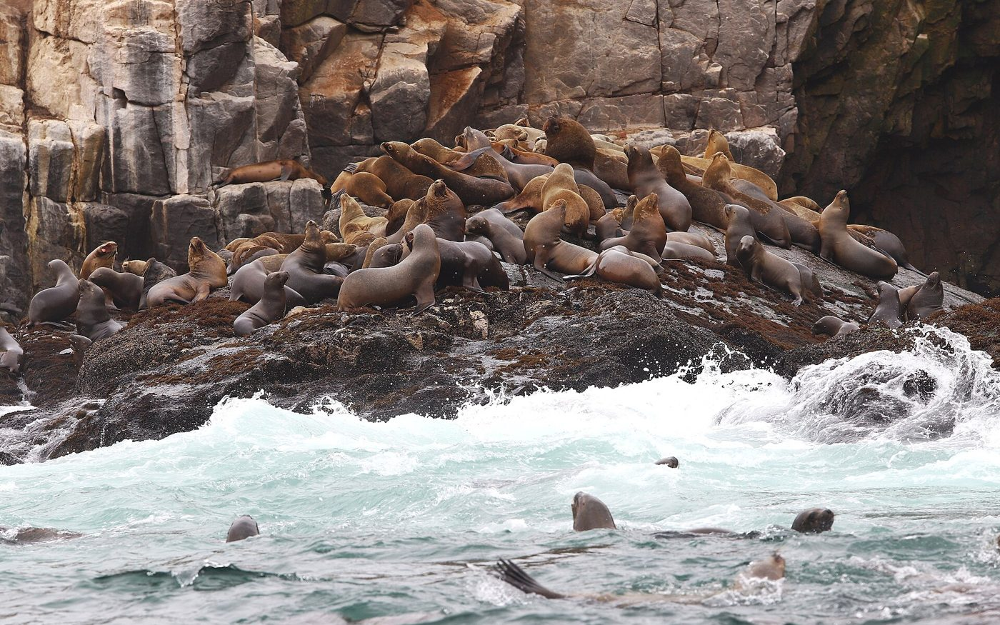
Islas Palomino
Bootstour ab Callao – Robben-Kolonie
Tag 1 · Ankunft & Miraflores
- Transfer Flughafen LIM → Hotel Miraflores (App-Taxi ~40–70 Min.)
- Spaziergang Malecón, Parque del Amor, Larcomar
- Abendessen: Ceviche / Nikkei (z. B. rund um Parque Kennedy)
Tag 2 · Klassische Lima-Highlights
| Zeit | Highlight | Tipp |
|---|
| Vormittag | Centro: Plaza Mayor, Kathedrale, Convento San Francisco (Katakomben) | früh starten, Traffic; abends nicht im Centro bleiben |
| Mittag | Ceviche-Lunch | Miraflores oder Barranco |
| Nachmittag | Huaca Pucllana | ~S/15; optional Abendbeleuchtung |
| Abend | Barranco: Puente de los Suspiros, Bajada de Baños, Sunset | kurzer Uber von Miraflores |
Weitere starke Optionen (falls Zeit/Interesse): Museo Larco (beste präkolumbische Sammlung), Circuito Mágico del Agua (abends), Food-Tour Miraflores/Barranco.
3. Tag 3 · Schwimmen mit Robben (Palomino)
Highlight: Boot von Callao zu den Islas Palomino – Neoprenanzug an, ~15–20 Min. im Pazifik mit wilden Seelöwen (Robben) schwimmen. Eine der wenigen Hauptstadt-Nähe-Erfahrungen dieser Art weltweit.
| Punkt | Details |
|---|
| Tour | Palomino Islands + Swim with Sea Lions |
| Dauer | ca. 4–5 Stunden (inkl. Transfer) |
| Preis | ca. 95–145 USD p.P. (Shared/Privat, je Anbieter) |
| Inklusive typisch | Hotel-Pickup Miraflores, Boot, Guide, Neopren, Schwimmweste, SERNANP-Gebühr |
| Anbieter | InPeru ~95 USD · EcoTour ~109 · Haku ~118 · Viator ~125 · Aura Andina ~145 |
| Start | meist morgens; Callao-Hafen |
| Wichtig | schwimmfähig sein; Wasser kalt; GoPro/wasserdichte Hülle |
Empfehlung Hotel in Miraflores mit Pickup buchen · WhatsApp-Bestätigung Vortag
Bootstour durch die Inseln vor Callao – unterwegs oft auch Seevögel / Pinguine an den Cavinzas-Inseln.
Lima Hotels (2–3 Nächte)
- Miraflores: nah Malecón / Parque Kennedy (Midrange–Boutique)
- Alternativ Barranco, wenn ihr mehr Nachtleben/Kunst wollt
- Gepäck am Abflugtag (13.10.) ggf. Hotel-Lager oder Day-Use bis zum Flug
4. Arequipa – Selbstfahrer 4×4
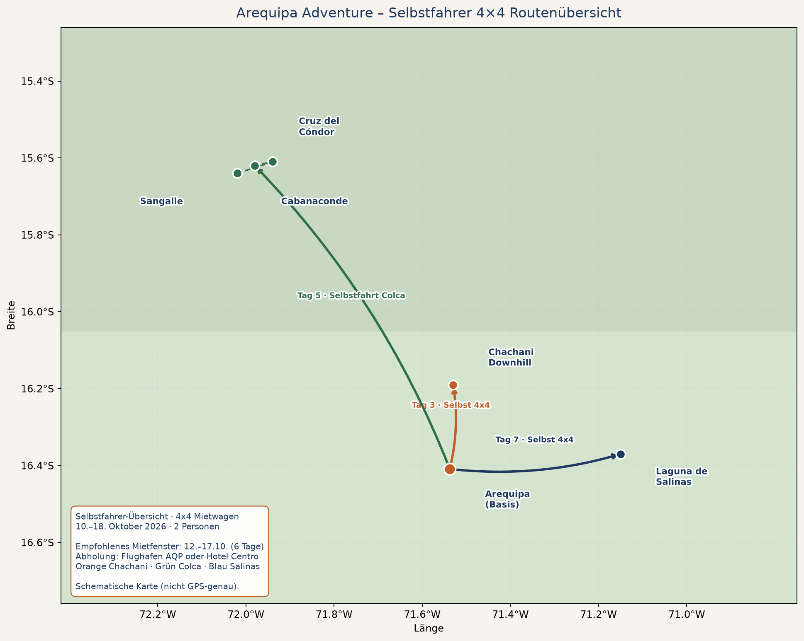
Mietwagen nur Arequipa: Di 14.10. morgens → Fr 17.10. abends (4 Tage).
Orientierung 80–120 USD/Tag → ca. 320–480 USD. Atix / Kala / Caminos. Abholung AQP oder Hotel.
| Tag | Programm | Auto |
|---|
| 4 · 13.10. | Ankunft AQP, Akklimatisation Centro / Yanahuara | Taxi |
| 5 · 14.10. | Chachani: 4×4 hoch + Downhill-Bikes | abholen |
| 6 · 15.10. | Laguna de Salinas selbst | ja |
| 7–8 · 16.–17.10. | Colca selbst (Cabanaconde/Sangalle/Cóndor) | ja · Rückgabe 17.10. abends |
| 9 · 18.10. | Puffer / Abflug | nein |

Arequipa + Misti
Weiße Stadt, Vulkan-Kulisse
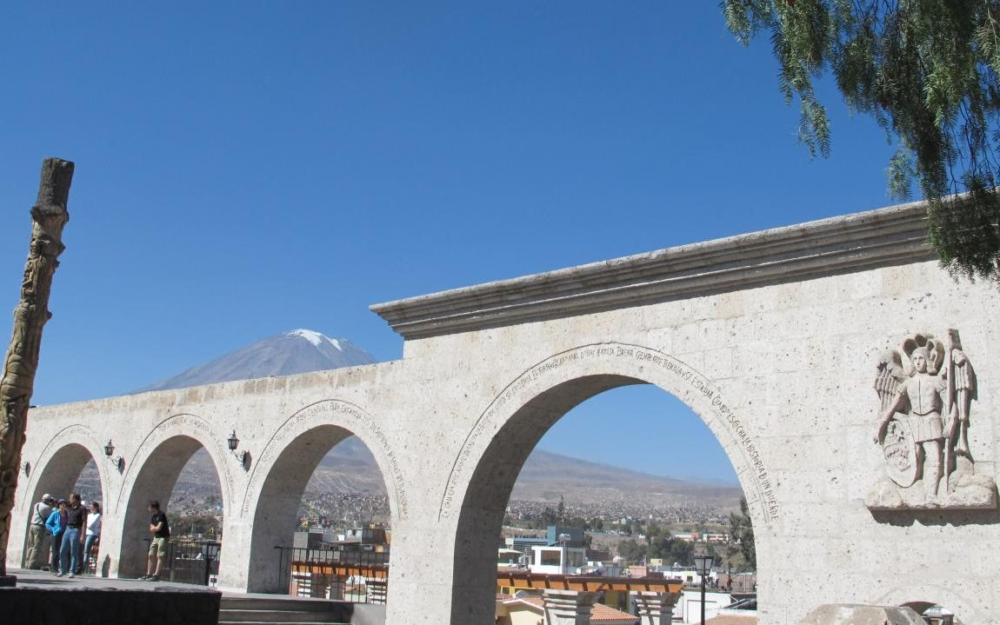
Yanahuara
Aussicht am Akklimatisations-Tag

Chachani
Tag 5: 4×4 + Downhill

Laguna de Salinas
Tag 6: Selbstfahrer-Hochland

Colca Canyon
Tag 7–8: Selbstfahrt + Trek

Cruz del Cóndor
Tag 8 auf dem Rückweg
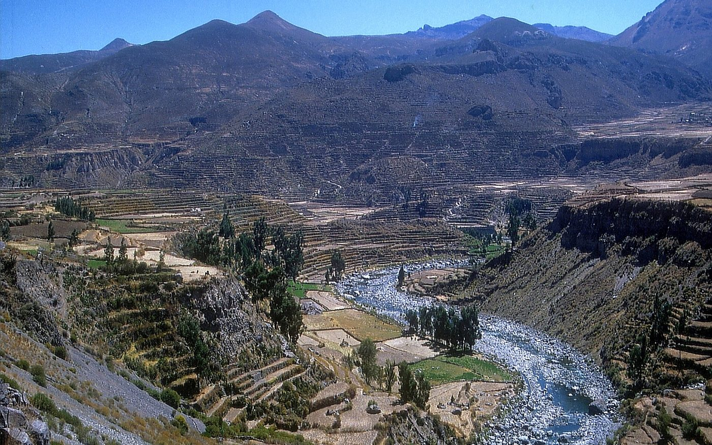
Colca-Tal mit Andenen – unterwegs zwischen Chivay und Cabanaconde.
5. Kosten-Orientierung (2 Personen)
| Posten | für 2 ca. |
|---|
| Lima Hotels 3 Nächte | 240–450 USD |
| Palomino Robben-Tour | 190–290 USD |
| Lima Essen/Uber/Eintritte | 120–220 USD |
| Inlandsflug LIM↔AQP (hin) | 120–250 USD |
| Arequipa Hotels ~5 Nächte + Sangalle | 280–550 USD |
| 4×4 Mietwagen 4 Tage | 320–480 USD |
| Benzin Arequipa-Block | 70–120 USD |
| Chachani Bikes/Guide | 120–180 USD |
| Colca DIY (Boleto+Sangalle+Essen) | 100–160 USD |
| Vor Ort gesamt (ohne Interkontinentalflug) | ca. 1.700–2.900 USD |
6. Buchungs-Checkliste
- Flüge LAX→LIM (10.10.) und AQP→LIM→LAX (18.10.) + Inlandsflug LIM→AQP (13.10.)
- Hotel Miraflores 10.–12.10. (Check-out 13.10.)
- Palomino Robben-Tour 12.10. (InPeru / Haku / Viator) – früh buchen
- Hotel Arequipa Centro 13.–15. + 17.10. (Sangalle 16.10.)
- 4×4 reservieren 14.–17.10. (Atix/Kala/Caminos)
- Chachani Bike/Guide 14.10. mit Liberty abstimmen („eigenes Auto“)
- Offline-Maps Arequipa/Colca, Soles bar, Reiseversicherung
Kontakte
| Thema | Kontakt |
|---|
| Palomino / Robben | InPeru, Haku Tours, Aura Andina, Viator „Palomino Islands Swim“ |
| 4×4 Arequipa | Atix · Kala +51 959 225 662 · Caminos +51 959 975 711 |
| Chachani Bikes | Turismo Liberty WA +51 959 175 901 |
Gute Reise – erst Robben im Pazifik, dann 4×4 in den Anden.
Preise Orientierungsangaben. Fotos: Wikimedia Commons (Miraflores, Barranco, Plaza Mayor, Palomino/Seelöwen, Pucllana, Arequipa, Chachani, Salinas, Colca, Kondor, Yanahuara).